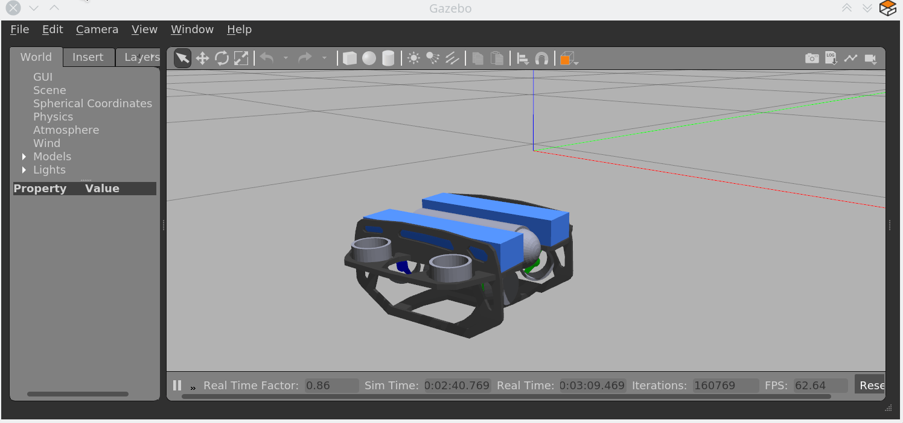

ROS Launch Setup
Attention
The following tutorial is not meant as a step-by-step solution for the first assignment. These are just toy examples to demonstrate how to use ROS and interact with the simulated BlueROV in an easy to follow manner. Therefore, we do not claim that these code snippets are complete and we use some funny names at times. Please do not copy-paste them.
Before We Start
So, before we start to create a super cool launch setup and have some super fancy nodes doing exciting stuff, lets take a step back and have another look on the keyboard-control setup from the setup instructions. Let us relaunch this setup and open just another terminal to run
rqt_graph
Make sure to select Nodes/Topics(all) in the upper left corner and refresh the view. This should yield a graph like
You can see the different nodes /bluerov/keyboard, /bluerov/mixer and /bluerov/esc_commander (we are not interested in the gazebo node and will simply ignore it) inside ellipses and topics inside rectangles. Since all these nodes live inside the /bluerov namespace and use relative topic names, everything has the /bluerov prefix (more on this later).
The esc_commander node is the interface between the ESCs which drive the thrusters and our ROS domain. It receives messages of the type fav_msgs/ThrusterSetpoint on the thruster_setpoint topic. That should be familiar to all of us from the previous tutorial and our dummy example with the setpoint_publisher.py. The message definition can be looked up in ~/fav/catkin_ws/src/fav/fav_msgs/msg/ThrusterSetpoint.msg and is:
std_msgs/Header header
float64[8] data
It contains the field data that is an double array of length 8. Each entry corresponds to a thruster.
Now let’s imagine the mixer node in the above graph would not exist and the keyboard node would have to publish messages of type fav_msgs/ThrusterSetpoint directly. This would imply that the keyboard node would have to know about the specific thruster configuration of our BlueROV to work. To move the vehicle forward when pressing W, the keyboard node would need to know that the first four motors are the only ones in horizontal direction and that they are configured in a way that all of them need to spin in positive direction to move the vehicle forward.
To add a layer of abstraction we have the mixer node. What keyboard actually wants to do is to say “the user pressed W, so move forward (i.e. set a positive value for thrust)” and from there on it is in the mixer’s responsibility to translate this to actual setpoints for the specific thrusters that participate in the forward movement of the vehicle.
Basically, we divided a bigger problem into two smaller problems. In this case this can be especially handy, because also a controller we might program at some later stage, does not need to have knowledge of specific thrusters/actuators. It can directly output commands corresponding to the actuated degrees of freedom of the BlueROV. And since all degrees of freedom of the vehicle are actuated, we can control all degrees of directly ü•≥.
Mathematically the mixer node computes the following equation:
where \(t_0\) to \(t_7\) are the direct thruster setpoints.
Having Fun with Open-Loop Control
Let us start where we have left off in the previous ROS Package section.
We have a package called awesome_package. And we have a node called setpoint_publisher.py. Since we know about the mixer now, we want to use it and have to modify our setpoint_publisher.py to publish to the actuation topics instead of publishing directly to the thruster_setpoint topic.
1 #!/usr/bin/env python
2 import rospy # this is the python interface for ROS
3 import math # needed to use the trigonometric functions sin and cos
4 from std_msgs.msg import Float64
5
6
7 class MyFirstNode():
8 def __init__(self):
9 rospy.init_node("setpoint_publisher")
10 self.vertical_thrust_pub = rospy.Publisher("vertical_thrust",
11 Float64,
12 queue_size=1)
13
14 def run(self):
15 rate = rospy.Rate(30.0)
16
17 while not rospy.is_shutdown():
18 msg = Float64()
19 t = rospy.get_time()
20 msg.data = 0.5 * math.sin(t)
21 self.vertical_thrust_pub.publish(msg)
22 rate.sleep()
23
24
25 def main():
26 node = MyFirstNode()
27 node.run()
28
29
30 if __name__ == "__main__":
31 main()
We do not created a new package or a new node, so we do not have to rebuild the workspace to apply the changes. But make sure you have saved the file after making these changes!
Make sure no nodes/launch setups are currently running. Otherwise stop them with Ctrl + C in the corresponding terminals.
Start the simulation environment
roslaunch fav_sim simulation.launch
Lastly start our setpoint_publisher node:
rosrun awesome_package setpoint_publisher.py
And you see… nothing. This will probably not be the last time things do not work out as expected. So let us investigate what might be the problem. Remember rqt_graph? Great tool to see how nodes are connected (or not).
The command should yield something like this:
Make sure to uncheck Dead sinks and Leaf Topics. Since the gazebo and gazebo_gui node are not relevant for our example, we can hide them by inserting -/gazebo,-/gazebo_gui in the first text box. Also make sure Nodes/Topics (all) in the upper left corner and refresh the view.
Do you recognize how every node but our poor setpoint_publisher lives inside the /bluerov box? Now we will interact with namespaces for the first time. There are three distinct ways to declare topic names. They are either global, relative, or private.
In our node we declared the topic name to be relative. But how can we tell? Because there is no leading / or ~.
9 self.vertical_thrust_pub = rospy.Publisher("vertical_thrust", Float64, queue_size=1)
But what does it mean? It means the effective topic name will not necessarily be exactly vertical_thrust. This depends on the namespace of our node. Since we did not specify any namespace during rosrun awesome_package setpoint_publisher.py, the topic will be resolved as /vertical_thrust. The mixer node living inside the /bluerov namespace subscribes to the relative topic vertical_thrust. Due to the namespace this will resolve as /bluerov/vertical_thrust. That is the reason why our node is not connected to the mixer.
How to fix it, you may ask? We simply push our node into the /bluerov namespace. This makes sense because our node is part of our BlueROV setup. Another ‘fix’ would be to prepend bluerov/ to the topic name of our publisher. But in this specific scenario I would rather call it botch. So let us push this node to the right namespace already! Just append __ns:=bluerov to the rosrun command.
rosrun awesome_package setpoint_publisher __ns:=bluerov
This tells our node to live inside the bluerov namespace.
Refresh our view of rqt_graph by clicking the refresh button in the upper left corner and you will see, we have a beautifully connected graph!
We can now admire our moving robot in the simulation:
By now we might get worried by the increasing number of needed terminal windows. Imagine we want to start additional nodes. Do we really need a separate terminal for each of them? Of course not! Launch files to the rescue!
Create A Launch Setup
Todo
The following sections need rework. They are not up to date for FaV 2022!
Create a new launchfile. You could name it first_simulation.launch for example:

The launchfile has to start the motor_command_sender node, the Gazebo simulation and spawns the BlueROV.
It could look like this:
1 <launch>
2 <arg name="vehicle_name" default="bluerov" />
3
4 <!-- start the gazebo simulator and an empty world -->
5 <include file="$(find bluerov_sim)/launch/gazebo_base.launch" />
6
7 <group ns="$(arg vehicle_name)">
8 <!-- Spawn the vehicle. You can use the args to set the spawn pose-->
9 <include file="$(find bluerov_sim)/launch/spawn_vehicle.launch">
10 <!-- Set the position-->
11 <arg name="x" value="0.0" />
12 <arg name="y" value="0.0" />
13 <arg name="z" value="-0.2"/>
14 <!-- Set roll, pitch, yaw-->
15 <arg name="R" value="0.0" />
16 <arg name="P" value="0.0" />
17 <arg name="Y" value="0.0" />
18 </include>
19 <!-- launch the motor_command_sender node-->
20 <node name="motor_command_sender" pkg="awesome_package" type="motor_command_sender.py"/>
21 </group>
22 </launch>
To start the setup, run:
roslaunch awesome_package first_simulation.launch
The result should look similar to:
Get Sensor Data
At this point we know the basics of actuating the vehicle. But to know how we want to actuate the vehicle, we might depend on some sensor input.
The BlueROV has a pressure sensor. The output of the pressure sensor is published under the pressure topic.
Theoretically we could use the motor_command_sender.py and modify its code to subscribe to the pressure topic. But to keep things modular and separated, we add a new node to the awesome_package. Let’s name it depth_calculator.py.
Note
Keep in mind, you have to make every node executable! See Write A Node.
The source code might look like this:
1 #!/usr/bin/env python
2 import rospy
3 from sensor_msgs.msg import FluidPressure
4 from std_msgs.msg import Float32
5
6
7 def pressure_callback(pressure_msg, publisher):
8 pascal_per_meter = 1.0e4
9 # what kind of pressure data do we get? relative/absolute? What about
10 # atmospheric pressure?
11 depth = -pressure_msg.fluid_pressure / pascal_per_meter
12 depth_msg = Float32()
13 depth_msg.data = depth
14 publisher.publish(depth_msg)
15
16
17 def main():
18 rospy.init_node("depth_calculator")
19 depth_pub = rospy.Publisher("depth", Float32, queue_size=1)
20 pressure_sub = rospy.Subscriber("pressure", FluidPressure,
21 pressure_callback, depth_pub)
22 rospy.spin()
23
24
25 if __name__ == "__main__":
26 main()
We can add this node to our launchfile by adding the following snippet:
<node name="depth_calculator" pkg="awesome_package" type="depth_calculator.py" />
And launch the setup:
roslaunch awesome_package first_simulation.launch
We can check that the nodes are properly connected in the rqt node graph:
And to inspect the data, we can plot it in rqt_multiplot

or use the rqt topic monitor or simply in the command line:
rostopic echo bluerov/depth
Names and Namespaces
Namespaces
The concept of names and namespaces is explained in detail in the ROS Wiki.
You can start nodes or load parameters in namespaces (you can also have nested namespaces). This means that the namespace gets prepended to the node’s name. We already used this in the above launchfile. Every node (and also every node in included launchfiles) inside the <group ns="$(arg vehicle_name)"> is launched inside a namespace. In this case the namespace’s name is determined by the argument vehicle_name. The default value of vehicle_name is bluerov. This means the name of the motor_command_sender node launched in line 20 will become /bluerov/motor_command_sender.
Names
If you have a node subscribing or publishing to/from a topic, you have to specify the topic name. You can do this in three different ways:
- Global
pub = rospy.Publisher("/my_robot/pose", PoseStamped)
A topic name with a leading
/will be resolved globally. This means that it does not matter if the node was launched in a namespace or not. The resulting topic name will be exactly/my_robot/pose.- Relative
pub = rospy.Publisher("position", PoseStamped)
A topic without leading
/will be relative. This means that, if the node was launched in a namespace, the namespace will get prepended. So for example if the node was launched in the namespacemy_robot, the resolved topic name will become/my_robot/position. In case the node was not launched inside any namespace, nothing will get prependended to the topic name. It will be just/position.- Private
rospy.init_node("my_controller") pub = rospy.Publisher("~debug", DebugMessage)
Private topics are similar to relative ones. The topic name start with
~. The namespace will get prepended if it has been specified. Additionally the name of the node will also be prepended in any case. So if the node with the namemy_controllerhas been started in the namespacemy_robot, the resolved topic name will be/my_robot/my_controller/debug. Without a namespace it would be/my_controller/debug.
BlueROV
You will only work with a single robot. Still it is nice to have things clean and start everything at least in the bluerov namespace (as shown in the above example launchfile by launching your nodes inside the <group>-tag with the ns attribute specified).
Generally, avoid global topic names to avoid topic name collision if you do not have a very specific reason to use them. Example: if you have a controller subscribing to a setpoint topic, it might be a good idea to use a private name "~setpoint". This way you avoid topic name conflicts in case you have another controller also subscribing to a setpoint topic.